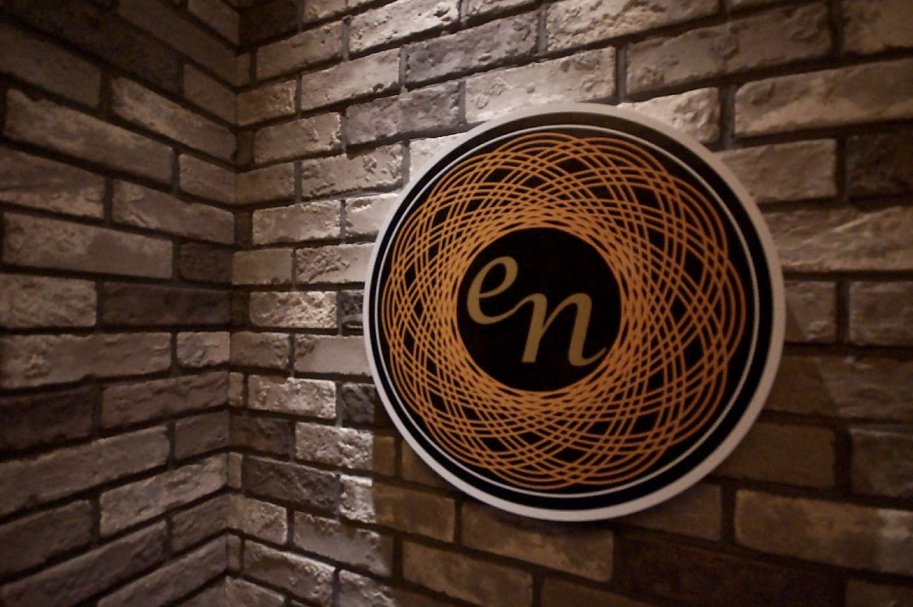

HOME / ABOUT
ABOUT福岡・博多を拠点に、飲食・人材・エンターテイメントの3つの事業を通じて「人の人生が動き出す交差点」をつくる。株式会社CROSSINの理念とビジョン、そして代表の想いをご紹介します。
PHILOSOPHY
CROSSINという社名には、「人と人」「人と機会」が交わる場所(crossing)でありたいという想いを込めています。飲食の一皿、夜の一杯、そして一つのキャリアの選択。その交差点から、誰かの明日が動き出す瞬間をつくり続けます。

VISION
飲食×人材×エンターテイメント。福岡から始まる私たちの挑戦は、いつか国境を越えて、もっと多くの人の「動く瞬間」に立ち会うために。CROSSINは事業の枠を超えて、人の人生そのものに向き合っていきます。
MESSAGE
「できない理由」より、
「できる方法」を。
お店の現場で誰かが笑った瞬間、面談で誰かの表情が変わった瞬間。そのひとつひとつが、私たちの原動力です。CROSSINは、飲食・エンターテイメント・人材という一見異なる領域を、「人の人生が動き出す交差点をつくる」という一つの理念でつないでいます。
福岡・博多という地域に根を張りながら、関わるすべての人にとっての「人生が動く場」を、これからも一つひとつ形にしていきます。
代表取締役 岸本 俊也
Syunya Kishimoto
COMPANY
| 会社名 | 株式会社CROSSIN |
|---|---|
| 代表者 | 代表取締役 岸本 俊也（Syunya Kishimoto） |
| 所在地 | 〒812-0016 福岡県福岡市博多区住吉3-13-28 プライム博多1F |
| TEL | 070-1234-5678 |
| syunya@clossin.co.jp | |
| 事業内容 | 飲食事業 / エンターテイメント事業 / 人材事業 |
| 運営ブランド | もつ鍋 仙頭、night sky BAR ~en~、SECRET ROOM、Solna |